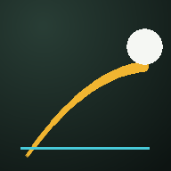

フォーム解析ラボ
投球・打撃フォームを、スマホやパソコンのブラウザだけで解析します。
動画は端末の外に送信されません。
解析はすべてブラウザ内で行われます。
📖
はじめての方へ — 説明書
撮り方、練習1回の流れ、画面の見かた、数値の読みかた、 データを失わないための注意、うまく測れないときの直し方。 この3つのアプリに共通の使い方をまとめてあります。
▶
解析をはじめる
投球／打撃を切り替えて使えます。コマ送り・トリミング・骨格と軌跡の表示・ チェックポイント記録・グラフ・2動画比較・再現性の確認。
◆
投球動作解析 Ver.1
(開発中)
設計仕様書 Ver.1 に沿った投球専用版。選手・セッション管理、較正(身長比)、 事前解析と平滑化、イベント6点の検出と手動確定、各指標の算出と球の記録、 キネマティック・シークエンス(骨盤→胸郭→上腕→手の角速度と順番・ブレーキ)、 複数球の平均・SD・CV と本人比、アラート、 10球ブロックごとの変化、CSV / JSON の書き出しと読み込みまで、 Ver.1 の予定範囲が一通り入っています。
◆
打撃動作解析 Ver.1A
(開発中)
設計仕様書 Ver.1 に沿った打撃専用版。打者・セッション管理、較正(胴体長基準)、 事前解析と平滑化、イベント5点の検出と手動確定(始動は4候補から選択・インパクトは手動必須)、 各指標の算出と測定信頼度、スイングの記録、タイミングとトップのタイムラグの可視化、 複数スイングの平均・SD・CV と本人比、アラート、10本ブロックごとの動作変化、 CSV / JSON の書き出しと読み込みまで、Ver.1A の予定範囲が一通り入っています。
iPhoneで使うときは「ホーム画面に追加」がおすすめです。
Safariでこのページを開く
下の共有ボタン(□に↑)をタップ
「ホーム画面に追加」を選ぶ
アプリのように全画面で開き、保存したデータも消えにくくなります。 一度開いておけば、電波の弱い場所でも動きます。